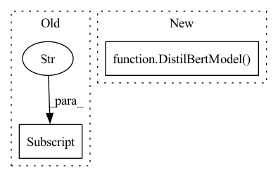

Pattern ID :23400

Before Change
def __init__(self, distilbert, dropout=None):
super(DistilBertForQuestionAnswering, self).__init__()
self.distilbert = distilbert // allow bert to be config
self.dropout = nn.Dropout(dropout if dropout is not None else self.distilbert.config["hidden_dropout_prob"])
self.classifier = nn.Linear(self.distilbert.config["hidden_size"], 2)
self.apply(self.init_weights)
After Change
def __init__(self, config: DistilBertConfig):
super(DistilBertForQuestionAnswering, self).__init__(config)
self.distilbert = DistilBertModel(config)
self.dropout = nn.Dropout(
config.classifier_dropout if config.classifier_dropout is not None else config.hidden_dropout_prob
)
self.classifier = nn.Linear(config.hidden_size, 2)
In pattern: SUPERPATTERN
Frequency: 4
Non-data size: 2
Instances
Fragment ID: 73529939
Project Name: paddlepaddle/paddlenlp
Commit Name: a858cf9048cf1b045f056f483f6775d831b23765
Time: 2023-03-24
Author: sijun.he@hotmail.com
File Name: paddlenlp/transformers/distilbert/modeling.py
M Class Name: DistilBertForQuestionAnswering
N Class Name: DistilBertForQuestionAnswering
M Method Name: __init__(2)
N Method Name: __init__(3)
M Parent Class: DistilBertPretrainedModel
N Parent Class: DistilBertPretrainedModel
M File Name: paddlenlp/transformers/distilbert/modeling.py
N File Name: paddlenlp/transformers/distilbert/modeling.py
M Start Line: 351
M End Line: 355
N Start Line: 301
N End Line: 307
'>
Before Change
self.pre_classifier = nn.Linear(self.distilbert.config["hidden_size"], self.distilbert.config["hidden_size"])
self.activation = nn.ReLU()
self.dropout = nn.Dropout(dropout if dropout is not None else self.distilbert.config["hidden_dropout_prob"])
self.classifier = nn.Linear(self.distilbert.config["hidden_size"], num_classes)
self.apply(self.init_weights)
def forward(self, input_ids, attention_mask=None):
After Change
def __init__(self, config: DistilBertConfig):
super(DistilBertForSequenceClassification, self).__init__(config)
self.num_classes = config.num_labels
self.distilbert = DistilBertModel(config)
self.pre_classifier = nn.Linear(config.hidden_size, config.hidden_size)
self.activation = nn.ReLU()
self.dropout = nn.Dropout(
config.classifier_dropout if config.classifier_dropout is not None else config.hidden_dropout_prob
'>
Fragment ID: 73529938
Project Name: paddlepaddle/paddlenlp
Commit Name: a858cf9048cf1b045f056f483f6775d831b23765
Time: 2023-03-24
Author: sijun.he@hotmail.com
File Name: paddlenlp/transformers/distilbert/modeling.py
M Class Name: DistilBertForSequenceClassification
N Class Name: DistilBertForSequenceClassification
M Method Name: __init__(2)
N Method Name: __init__(4)
M Parent Class: DistilBertPretrainedModel
N Parent Class: DistilBertPretrainedModel
M File Name: paddlenlp/transformers/distilbert/modeling.py
N File Name: paddlenlp/transformers/distilbert/modeling.py
M Start Line: 284
M End Line: 291
N Start Line: 236
N End Line: 245
'>
Before Change
super(DistilBertForTokenClassification, self).__init__()
self.num_classes = num_classes
self.distilbert = distilbert // allow bert to be config
self.dropout = nn.Dropout(dropout if dropout is not None else self.distilbert.config["hidden_dropout_prob"])
self.classifier = nn.Linear(self.distilbert.config["hidden_size"], num_classes)
self.apply(self.init_weights)
After Change
def __init__(self, config: DistilBertConfig):
super(DistilBertForTokenClassification, self).__init__(config)
self.num_classes = config.num_labels
self.distilbert = DistilBertModel(config)
self.dropout = nn.Dropout(
config.classifier_dropout if config.classifier_dropout is not None else config.hidden_dropout_prob
)
self.classifier = nn.Linear(config.hidden_size, config.num_labels)
'>
Fragment ID: 73529941
Project Name: paddlepaddle/paddlenlp
Commit Name: a858cf9048cf1b045f056f483f6775d831b23765
Time: 2023-03-24
Author: sijun.he@hotmail.com
File Name: paddlenlp/transformers/distilbert/modeling.py
M Class Name: DistilBertForTokenClassification
N Class Name: DistilBertForTokenClassification
M Method Name: __init__(2)
N Method Name: __init__(4)
M Parent Class: DistilBertPretrainedModel
N Parent Class: DistilBertPretrainedModel
M File Name: paddlenlp/transformers/distilbert/modeling.py
N File Name: paddlenlp/transformers/distilbert/modeling.py
M Start Line: 423
M End Line: 428
N Start Line: 369
N End Line: 376
'>
Before Change
def __init__(self, distilbert):
super(DistilBertForMaskedLM, self).__init__()
self.distilbert = distilbert
self.vocab_transform = nn.Linear(self.distilbert.config["hidden_size"], self.distilbert.config["hidden_size"])
self.activation = nn.GELU()
self.vocab_layer_norm = nn.LayerNorm(self.distilbert.config["hidden_size"])
self.vocab_projector = nn.Linear(self.distilbert.config["hidden_size"], self.distilbert.config["vocab_size"])
After Change
def __init__(self, config: DistilBertConfig):
super(DistilBertForMaskedLM, self).__init__(config)
self.distilbert = DistilBertModel(config)
self.vocab_transform = nn.Linear(config.hidden_size, config.hidden_size)
self.activation = nn.GELU()
self.vocab_layer_norm = nn.LayerNorm(config.hidden_size)
self.vocab_projector = nn.Linear(config.hidden_size, config.vocab_size)
'>
Fragment ID: 73529940
Project Name: paddlepaddle/paddlenlp
Commit Name: a858cf9048cf1b045f056f483f6775d831b23765
Time: 2023-03-24
Author: sijun.he@hotmail.com
File Name: paddlenlp/transformers/distilbert/modeling.py
M Class Name: DistilBertForMaskedLM
N Class Name: DistilBertForMaskedLM
M Method Name: __init__(2)
N Method Name: __init__(2)
M Parent Class: DistilBertPretrainedModel
N Parent Class: DistilBertPretrainedModel
M File Name: paddlenlp/transformers/distilbert/modeling.py
N File Name: paddlenlp/transformers/distilbert/modeling.py
M Start Line: 478
M End Line: 484
N Start Line: 426
N End Line: 432